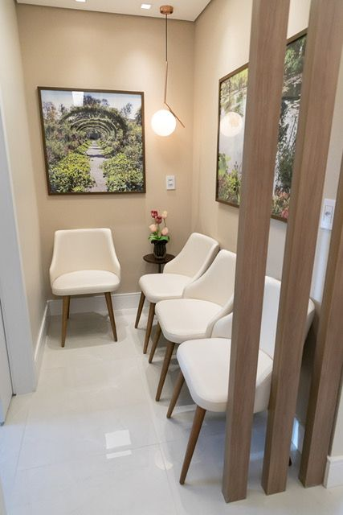

Dermatologia clínica
Diagnóstico e tratamento das doenças da pele, dos cabelos e das unhas, em adultos e crianças.

Preceptora da residência de Dermatologia da UFBA · CRM-BA 20305 · RQE 12865
A Dra. Andréia Nogueira Ramos se formou, fez residência e mestrado na UFBA, onde hoje ajuda a formar novos especialistas. Atende na Flore Dermatologia, no Hospital São Rafael e por teleconsulta.
Por onde começar
Doenças da pele, dos cabelos e das unhas, em adultos e crianças.
Dermatologia clínicaPintas e cirurgiaExame das pintas com dermatoscopia, retirada de sinais e pequenas cirurgias.
Pintas e cirurgiaDermatologia estéticaToxina botulínica e tratamentos com indicação criteriosa.
Dermatologia estéticaAtendimento
Cada conduta é definida depois de uma consulta com escuta e explicação detalhada, como destacam os pacientes nas avaliações.
Diagnóstico e tratamento das doenças da pele, dos cabelos e das unhas, em adultos e crianças.
Retirada de sinais e pequenas cirurgias de pele, com aperfeiçoamento em cirurgia dermatológica pela USP.
Toxina botulínica e outros tratamentos, com a especialização em dermatocosmiatria da FMABC.
Consulta por vídeo, com prescrição online, para quem prefere ser atendido a distância.
Formação
Hoje, como preceptora da residência de Dermatologia da UFBA, a Dra. Andréia acompanha a formação dos próximos dermatologistas da Bahia.
Pesquisa
No mestrado na UFBA, a Dra. Andréia estudou a pele de pessoas com albinismo, com dermatoscopia. Os resultados saíram em revistas indexadas no PubMed.
A Dra. Andréia responde
No Doctoralia, a Dra. Andréia já respondeu 26 perguntas públicas de pacientes. Algumas delas:
“Existem muitas razões para que o cabelo caia. O correto diagnóstico é que vai direcionar o tratamento. Hoje, não existem muitas evidências que o uso destas vitaminas possa ajudar na grande maioria das quedas.”
“O tratamento da olheira depende da causa. Pode ser por excesso de pigmento, excesso de vasos ou pela alteração na estrutura óssea. […] A depender do caso, podem ser indicados cremes, tratamentos a laser ou preenchimento.”
“Ela precisa ser avaliada por um dermatologista. Pode ser necessário realizar um procedimento cirúrgico para a unha encravada.”
Avaliações no Doctoralia
Médica excelente. Examina cuidadosamente e orienta de forma que o paciente entenda.
Uma médica com atendimento de excelência, além do conhecimento da parte técnica, é muito gentil e atenciosa.
Foi minha primeira consulta com a Dra. Andreia. Ela é muito atenciosa e empática. Explica tudo com detalhes e é bastante minuciosa no exame físico.
Médica super cuidadosa e completa, avaliou desde os meus sinais até minhas queixas estéticas e cabelos!
Atenciosa e não tem pressa na sua consulta! Olha cada detalhe.
Sou paciente da Dra. Andréia há 10 anos e posso afirmar com certeza que ela é uma médica de excelência. […] Sempre atenta e cuidadosa.
Informação clara sobre processo de tratamento, atenciosa e transmite tranquilidade e confiança.
Dermatologista super atenciosa, analisa seu corpo inteiro. No meu caso possuo vários sinais e ela olha um por um.
Super bem atendido, simpática, preocupada e minuciosa na explicação.
Onde atendo
Av. Tancredo Neves, 2539 · Torre Londres, salas 509 e 510 · Caminho das Árvores, Salvador
Av. São Rafael, 2152 · São Marcos, Salvador. Atendimento de dermatologia geral pela Rede D'Or.


Dúvidas frequentes
Sim. A Dra. Andréia faz teleconsulta por vídeo, para adultos e crianças, com prescrição online. Fale com a equipe pelo WhatsApp para marcar.
Depende do local. Na Flore Dermatologia, além de particulares, Bradesco Saúde e Sul América Saúde. No Hospital São Rafael, a lista é maior. Confirme com a equipe antes de marcar.
Sim. A Dra. Andréia atende adultos e crianças de qualquer idade.
É o que muitos pacientes destacam nas avaliações: a Dra. Andréia examina com cuidado, olha os sinais um a um e explica o que encontra.
Agende
Na Flore Dermatologia, no Hospital São Rafael ou por teleconsulta.
Agendar pelo WhatsApp